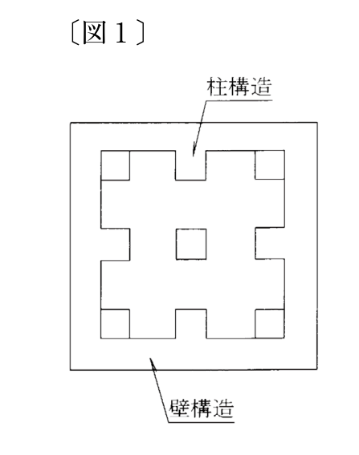
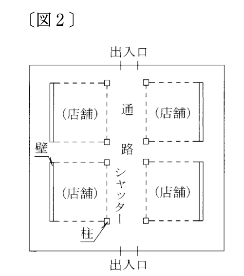
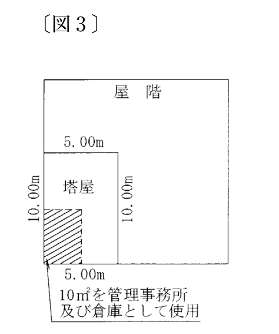

建物の一部が2階から最上階まで吹抜けとなっている場合には、1階から最上階までの各階の吹抜け構造の部分は、建物の床面積に算入しない。
解答：×
吹抜けで除くのは上階の床面積。1階は床があるから算入する。
準則82条8号は「その吹抜の部分は、上階の床面積に算入しない」としている。2階から上が吹抜けなら、床がないのはその上の階である。1階には床があるので、そのまま算入する。
根拠準則82条8号
出典：法務省 令和5年度 土地家屋調査士試験を加工して作成
令和5年度・問12
令和5年度土地家屋調査士試験の問12です。全5肢の問題文と○×の解答を掲載しています。
建物の一部が2階から最上階まで吹抜けとなっている場合には、1階から最上階までの各階の吹抜け構造の部分は、建物の床面積に算入しない。
解答：×
吹抜けで除くのは上階の床面積。1階は床があるから算入する。
準則82条8号は「その吹抜の部分は、上階の床面積に算入しない」としている。2階から上が吹抜けなら、床がないのはその上の階である。1階には床があるので、そのまま算入する。
根拠準則82条8号
出典：法務省 令和5年度 土地家屋調査士試験を加工して作成
区分建物でない鉄筋コンクリート造の建物について、壁の厚みが各階ごとに異なる場合には、各階ごとに壁の中心線で囲まれた部分の水平投影面積により床面積を算出する。
解答：○
区分建物でない建物は、各階ごとに壁その他の区画の中心線で囲まれた部分による。
規則115条は「各階ごとに」壁その他の区画の中心線で囲まれた部分の水平投影面積によるとしている。階ごとに測るのだから、壁の厚みが階で違えばそれぞれの階の中心線で計算する。木造については、昭46.4.16民甲238号が壁の厚さや形状にかかわらず柱の中心線によるとしている。
根拠規則115条昭和46.4.16民三発第238号依命通知昭46.4.16民甲238号
出典：法務省 令和5年度 土地家屋調査士試験を加工して作成
次の〔図1〕のとおり、区分建物を内壁で囲まれた部分により床面積を算出する場合において、当該区分建物が鉄筋コンクリート造であって、柱と壁を兼ねている構造の部分が柱状に凸凹しているときは、その柱状に凸凹している部分は、専有部分の範囲から除外して床面積を算出する。

解答：×
柱を兼ねる壁の凸凹は、壁面の線で求積し除外しない。
区分建物の床面積は壁その他の区画の内側線で囲まれた部分による（規則115条）。壁面から内側に突き出た柱状の部分は、区画そのものを動かすものではなく、柱の凹凸は無視して壁面の線で求積する。柱状の部分を専有部分から除外して算出するのではない。
根拠規則115条昭和46.4.16民三発第238号依命通知昭46.4.16民甲238号
出典：法務省 令和5年度 土地家屋調査士試験を加工して作成
次の〔図2〕のとおり、ビル内の地下において、1方向のみを壁構造とし、他の3方向は鉄製のシャッターで仕切られており、営業中はシャッターを上げ、閉店後はシャッターを閉める構造の店舗部分は、区分建物の専有部分の床面積に算入しない。

解答：×
シャッターで仕切られた店舗部分も専有部分として床面積に入る。
シャッターは閉めれば外気を分断でき、壁と同じく区画をなす。構造上・利用上の独立性がある店舗部分は専有部分に当たり（法2条22号）、その区画の内側線で囲まれた面積を床面積に算入する（規則115条）。
出典：法務省 令和5年度 土地家屋調査士試験を加工して作成
次の〔図3〕のとおり、機械室、冷却装置室及び屋上に出入りするための階段室が設置されている天井高2.5メートルの塔屋について、当該塔屋の一部が、管理事務所及び倉庫として使用されている場合には、管理事務所及び倉庫として使用されていない部分も含めた当該塔屋全体を建物の床面積に算入する。

解答：○
一部でも事務所等に使う塔屋は、全体を床面積に入れる。
機械室や冷却装置室、屋上への階段室だけの塔屋は、建物の附属物として階数・床面積に表さない扱い（昭38.10.22民甲2933号）。ただし、その一部が管理事務所や倉庫として使われているときは、塔屋全体を一つの階として床面積に算入する。
根拠昭和38.10.22民事甲2933号民事局長通達昭38.10.22民甲2933号
出典：法務省 令和5年度 土地家屋調査士試験を加工して作成
解説は、条文・通達・判例の原典に当たって書いたものです。根拠として挙げた条文はリンク先でそのまま読めます。